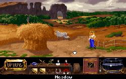
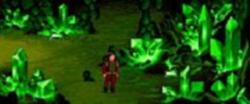

Kyrandia
The Legend of Kyrandia — серия квестов-адвенчур родом из начала девяностых. Состоит из трёх частей («книг»). Доставляла милым юмором, хорошей музыкой и привлекательно написанным игровым миром, наполненным харизматичными персонажами. При этом юмор и персонажи сдобрены изрядной долей сюрреалистического безумия. Трилогия занимает достойное место в ряду прочих замечательных продуктов компании Westwood Studios.
Overview, геймплей и особенности

Занция и пейзаж.
Кирандия — волшебная страна, населённая, помимо людей и обыкновенного зверья, всякими фантастическими существами разной степени разумности (от охотно идущих на диалог до тех, кому можно разве что послужить обедом). Сюжет заключается в путешествиях, преимущественно пеших, по ней и близлежащим землям, которые, в конечном итоге, неизменно решают дальнейшую судьбу аж всей страны.
Все три игры серии имели чрезвычайно простые управление и интерфейс. Использовалась только мышь (и только её левая кнопка). Перемещение по миру, разговоры со всякими встречными существами и все действия с предметами осуществлялись путём тыканья мышью в соответствующие места игровых локаций и инвентаря. Это было возможным, в частности, благодаря тому, что инвентарь располагался прямо на виду, под игровым экраном. (Сам игровой экран от этого, конечно, несколько терял в размерах.) Первые две части имели в сюжете по одному убер-эпизоду каждая (для прохождения обоих этих эпизодов требовалось многократное повторение рутинных действий; подробности ниже).
Блестящий саундтрек ко всей трилогии написал Frank Klepacki, тот самый, который озвучил Dune, Blade Runner и Command & Conquer.
Персонажи

Скриншот из игры Legend of Kyrandia: Брэндон и Тибериум. На принцев радиация не действует. Спасибо КЭП.
Центральные:
- Брэндон (Brandon) — ГГ первой части, безоблачный долбоёб а-ля Роджер Вилко, ничего толком делать не умеет,[1] зато наследный принц. Идёт к успеху, опираясь в основном на удачу, а также поддержку друзей и просто случайных встречных.
- Занция (Zanthia) — ГГ второй части, Алхимик-тян, мастерски варит зелья из подручных компонентов (в ход идут как более-менее традиционные коренья, так и откровенно лулзовые табуретки[2]). Из всех обитателей Кирандии и сопредельных стран она, по-видимому, наиболее здравомыслящее существо.
- Малколм (Malcolm) — антагонист первой и, по совместительству, ГГ третьей части. Тролль всея Кирандии, одет в шутовской костюм, мечтает узурпировать власть в стране just for lulz. При этом не гнушается и убийствами (но с этим моментом не всё такпросто).
Второстепенные:
- Рука (Hand) — таинственное существо (спойлер: главный антагонист второй части), выглядящее как перчатка в человеческий рост, гуляющая на паре пальцев. Помимо прочего, является особо циничной частью злобного убервеликана. В игре так же встречается его нога.
- Марко (Marko) — волшебник-нуб в пафосном прикиде. Запавший на Занцию, он регулярно появляется на её пути, неизменно предлагая свою неоценимую помощь, однако помогать приходится только ему самому (это комично и весьма доставляет).
- Дарм (Darm) — почтенный старец-волшебник, давно впавший в маразм. Держит при себе немаленького фиолетового дракона по имени Брэндивайн, которая (если судить по CD-версии с озвучкой - самка, голос женский) временами поясняет ему, что вообще происходит вокруг. [3]
- Фаун (Faun) — скромных размеров существо с рогами и хвостом, напоминающее, как ни удивительно, фавна. Вроде как ассистент Занции, но занимается исключительно тем, что пинает хуи в её отсутствие. Имеет неприятную привычку брать без спроса чужие вещи.
- Каллак (Kallak) — (названный) дед Брэндона; второй, наряду с Занцией, кандидат в персонажи, обладающие незамутнённым сознанием (что не помешало ему сглегка переболеть ФГМ в третьей книге). Ему, впрочем, не сильно везёт, и он редко попадает в кадр повествования.
- Бринн (Brynn) — девушка с неясно очерченными магическими способностями, зато умеющаявесьма туманно выражаться.
А также другие, подчас не менее колоритные, хотя и эпизодические персонажи, тысячи их!
Книга первая
Король Уильям и королева Катерина убиты гадким Малколмом (спойлер: он их не убивал, просто гг вместе с окружающим его миром внезапно подвергся СДВ), а их сын Брэндон живёт со своим якобы дедом Каллаком, бывшим советником короля, где-то в лесах Кирандии. В один прекрасный день Малколм, добывая себе лулзы, устраивает в местных лесах дестрой и попутно превращает Каллака в камень. С этого и начинается былинное путешествие Брэндона к законно наследуемому им трону.
Особое место в геймплее первой части занимает прохождение «пещеры». Лабиринт, по которому можно путешествовать только с огненными ягодами в руках, имеющими свойство быстро гаснуть, требует от игрока скрупулёзного ручного составления карты. Это было бы не таким уж и унылым занятием, если бы не тот факт, что когда ягоды гаснут[4][5] , приходится снова и снова наблюдать сцену смерти Брэндона от НЕХ , после чего делать load game. Алсо, в лабиринте можно не найти ключ, и в результате только к концу игры узнать о том, что прохождение зафэйлено (назад за ключом вернуться нельзя). Особо неудачливые игроки, не оставившие под рукой должную сохраненку, после этого вынуждены всё начинать сначала.
Игра была первой в серии, но в ней многого хватало, конечно, лулзов меньше чем во второй и даже третьей, но всё равно они есть, пусть и в маленьких количествах.
Также присутствуют 4 камня, которые наделяют ГГ особыми силами:
- Жёлтый. Лечит.
- Сиреневый. Нужен только для пещеры ибо позволяет по ней невозбранно ходить без ягод.
- Синий. Снимает ближайшие чары.
- Красный. Самый труъ камень. Позволяет становиться невидимым.
Книга вторая, «The Hand of Fate»
По каким-то причинам Кирандия начинает исчезать по частям, и Рука в связи с этим направляет юную волшебницу Занцию на поиски какого-то там якорного камня, который находится чёрт знает где, а именно — в центре Земли. Задание в стиле «пойди туда — не знаю куда, принеси то — не знаю что» постепенно обрастает смыслом и, слегка растянувшись, заканчивается эпичной схваткой с очередным коварным волшебником зашкаливающей степени злодейства. По ходу приключений Занция не перестаёт шутить по любому поводу, а также винрарно(там таки были сиськи, да!(спойлер: В момент падения в стог)) переодеваться при смене климата. Также доставляет наличие панцушота.
В итоге, эту часть считают самым большим вином серии. Посуди сам, мой юный друг, огромное количество лулзов, возможность варить зелья и юзать их по назначению. Особенно вспоминается эпизод ближе к концу, когда нужно было зелья варить и наливать в банки так, чтобы получилась радуга.
Составление карты пещеры в первой части трилогии покажется детской забавой по сравнению с решением задачки про инвертированные Ханойские башни — мало того, что этот паззл и в оригинальном своём виде требует усидчивости и точности действий, так здесь он ещё и представлен в таком виде, что разработчиков начинаешь подозревать в потреблении воистину особых веществ.
Новые особенности:
- Новый, намного бОльший инвентарь. чем в прошлой части. Хотя и такого в паре мест всё равно почти не хватает.
- Можно варить зелья разного типа. I guarantee that.
- Больше юмора, точнее почти вся игра из него состоит.
Книга третья, «Malcolm's Revenge»
После ремонта Колёс судьбы всё начинает возвращаться на круги своя, вот и Малкольм ожил - смотри концовку второй части, школьник. Одна из основных задач теперь — извлечение лулзов посредством мести. Лулзы приносят очки, и чем больше Малколм устроит шуточек, тем выше итоговый счёт. Для этого можно применять что угодно: колоть гвоздями, ножницами и тому подобным всех подряд, делать бутерброды (а также мячики) из белок, давать пацанёнку игрушки или пугать его и т.п. Для невозбранного добывания существует спецжезл, который можно отыскать в каморке Малкольма. Каждое применение на персонаже(если не юзал на него раньше) приносит очки. Задумка сего неясна. Очевидно, это нагло спизженный шутом у стелс-пихоты пневмопих, ибо некоторые при тыканьи в них смеются, а другие говорят "хватит", видимо, в зависимости от ориентации.
Этапов здесь меньше, чем во второй части, но все сильно разнятся.
- Кирандия, район столицы.
- Кошачий остров (Пираты, блохи, собаки, кошки...).
- Край земли (от силы 5 экранов).
- Морское царство, тот свет (очень доставляющий арк, можно сыграть в крестики-нолики-поддавки).
- Кирандия, 5 лет спустя, район столицы.
- Кошачий остров снова (революция в самом разгаре).
- Снова, и в последний раз, район Столицы.
Особенности:
- Возможность выбрать ближе к концу один из трёх стилей прохождения: Добрый, Злой и т.н. "Рогатый нимб". Последний режим наиболее доставляет, ибо тогда ГГ не слащавый и не такой злой. Он остаётся самим собой. Ну вы понели.
- Возможность поработать в "тюрьмах", хотя точнее это — отработка, но русские переводчики (надмозги?) юзали слово "тюрьма".. Опишем подробнее:
- Первая тюрьма. Здесь мы должны плести кружева, которые похожи на большие снежинки. Для прохождения этапа достаточно зажать в руке гвоздь перед сопровождением. Лулзов не особо много.
- Вторая тюрьма. Здесь мы должны пахать на каменоломне. Чтобы свалить, достаточно взять удобрённые семена сезама. Сам процесс неимоверно доставляет.
- Третья тюрьма. Здесь нашу надзирательницу сковывают вместе с нами и ещё каким-то мужиком. Для прохождения достаточно ножниц, что выдают в этом уровне.
- Четвёртая, последняя, наиболее лулзовая тюряга. Гребём на галерах. Никого не напоминает? Комменты Малкольма очень доставляют.
- Головоломок трудных как таковых нет, есть только кошачий остров с его костями, которые закапывает волчара позорный и выкапывает на их месте камни (если под тем местом что-то есть).
- Кот-революционер, в русской версии переводчиков, говорящий как товаг'ищ Ленин. Ну и возможность устроить локальную революцию...(спойлер: против собак-эксплуататоров. Ага.)
- Некоторая нелинейность. Например, на 2 этап можно попасть аж 6 способами:
- Циркачи выбросят с корабля, естественно если вы туда придёте под видом кое-кого.
- Зелье телепортации.
- Зелье Пегаса. Доставляющий способ, особенно если применить в местах, где оно не работает. Можно даже получить комменты от некоторых знакомых.
- При побеге с галеры (4 тюряга).
- Поймать и соединить вместе двух угрей. Таки самый быстрый способ.
- Пожонглировать тремя кожаными мячиками перед собакой у корабля циркачей. Приносит больше всего очков и весьма доставляет.
Малозапоминающиеся вещи
- Очевидно, что между второй и первой частью прошло ощутимое время. Ибо местность вокруг дома Занции сильно изменилась, а точнее заболотилась.
- Фаун на цвет и вид не подходит той огромной полулягушке-полугуманоиду, что в болоте около дома Занции живёт.
- Очевидно, что в первой части именно Фаун спёр кубок.
- Школа рыб в 3 части невозбранно напоминает своими учениками нынешнюю школоту[6].
- Марко во второй части из тюряги можно не выручать, это на дальнейшем сюжете никак не отразится.
Trivia
Любой желающий может поиграть во все три части из-под операционок наших дней с помощью программы ScummVM. Хотя все части можно спокойно запустить без сией проги.
Примечания
- По жизни он лесник(лесоруб?)
- Игра слов: Toadstool - поганка; Toad stool - жабья табуретка.
- Судя по всему, здесь имеет место быть отсылка к эпической фэнтези-серии Dragonlance, в которой впавшему в детство волшебнику периодически даже приходилось напоминать, как его зовут.
- Ягоды гаснут только в кривых руках Брэндона. Поэтому их нужно оставлять в соседних с кустом локациях. Так можно осветить весь .
- Авотхуй, одну часть лабиринта никак не осветишь.
- Очередная игра слов: Fish school - это косяк рыб.
{kind=link}
{kind=link}